12-bit HD4096
High Definition Oscilloscopes
4× more resolution than standard 8-bit scopes — 0.5% DC gain accuracy across all models.
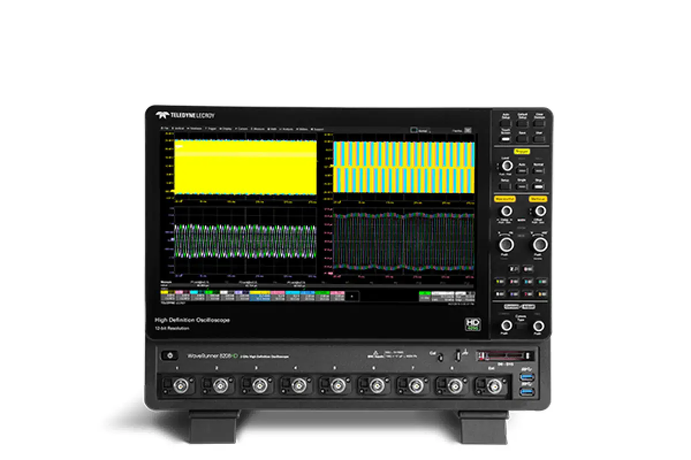
WaveRunner 8000HD
350 MHz – 2 GHz- 12-bit HD4096 · 10 GS/s on all 8 analog channels
- Expand to 16 channels with integrated digital option
- OscilloSYNC synchronization across multiple units
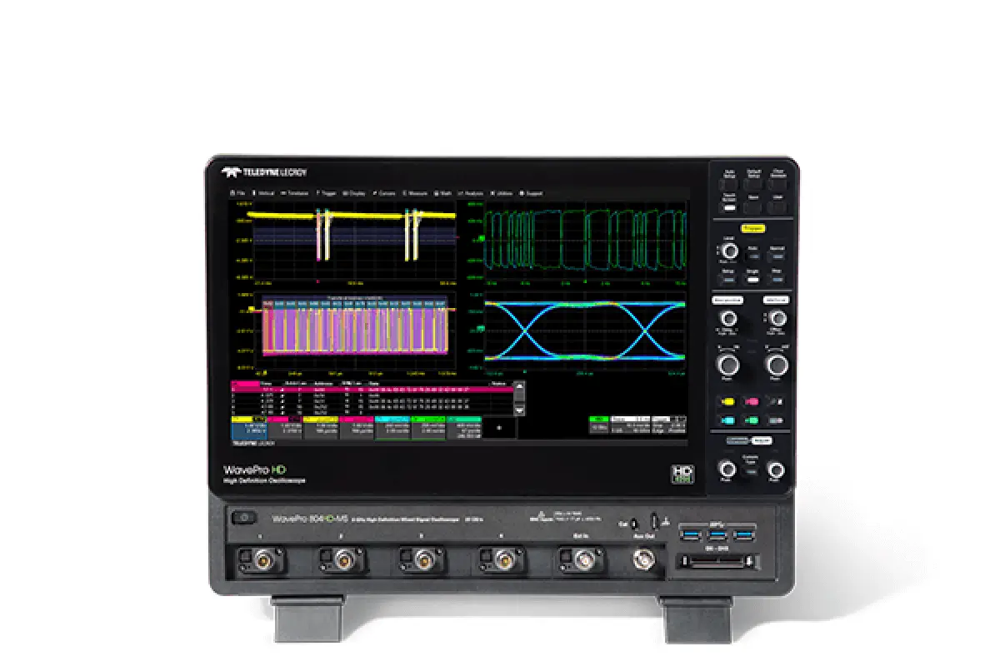
WavePro HD
2.5 GHz – 8 GHz- 12-bit HD4096 · 20 GS/s · 5 Gpts acquisition memory
- ProBus2 input supporting up to 8 GHz bandwidth
- UHD (4K) HDMI & DisplayPort output
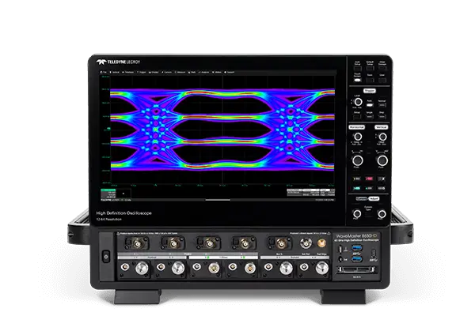
WaveMaster 8000HD
6 GHz – 65 GHz- Up to 65 GHz bandwidth · 320 GS/s sample rate
- 8 Gpts memory — up to 100 ms acquisition at full BW
- Multiple inputs: 1.85mm, ProAxial, ProBus
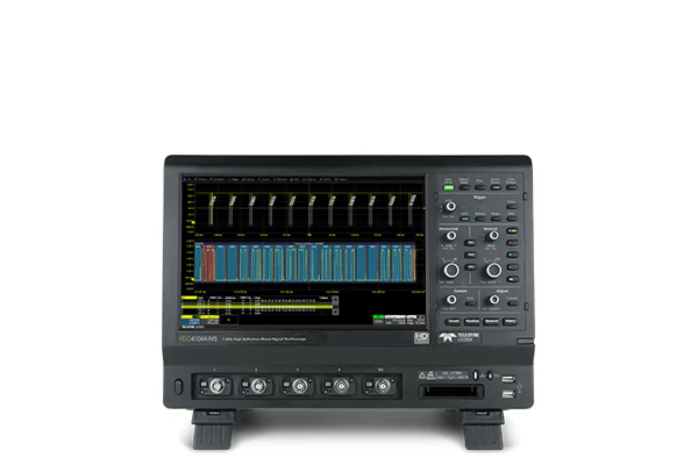
HDO4000A
200 MHz – 1 GHz- 12-bit HD4096 · MAUI with OneTouch UI
- 23 serial data standards for trigger & decode
- Zone Trigger for complex signal isolation
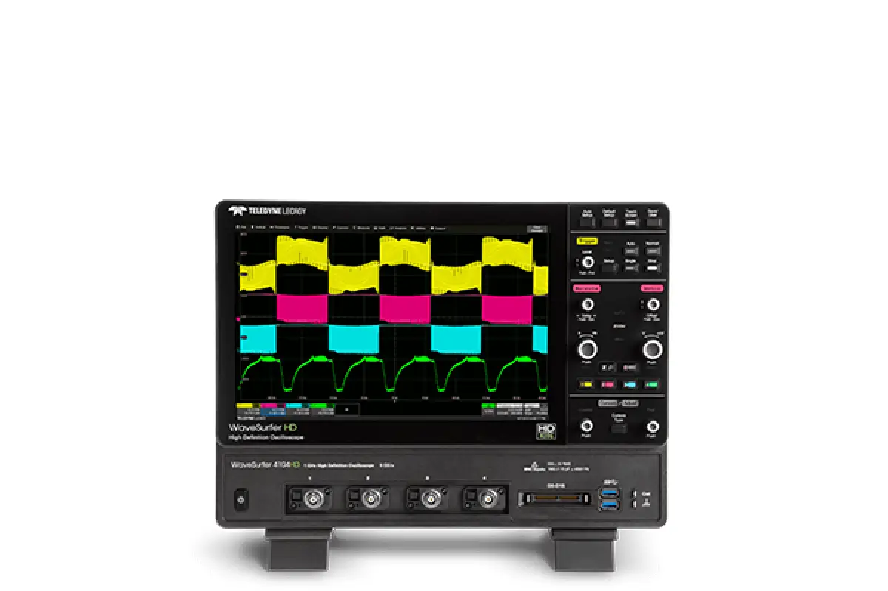
WaveSurfer 4000HD
1 GHz- 12-bit HD4096 · 25 Mpts acquisition memory
- ProBus input supporting 30+ probe categories
- WaveScan anomaly detection with statistics
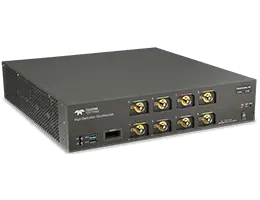
T3DSO4000L-HD
500 MHz – 2 GHz- 1U / 2U low-profile rackmount for ATE systems
- 12-bit HD · 750,000 wfm/s capture rate
- 500 Mpts memory · 16-ch logic analyzer included
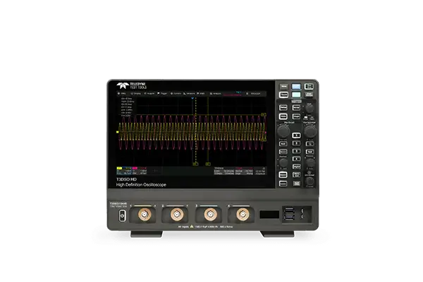
T3DSO3000HD
200 MHz – 1 GHz- 12-bit ADC · 400 Mpts per channel memory
- 890,000 wfm/s waveform capture rate
- 13 serial protocol decoders incl. CAN FD & MIL-STD-1553B
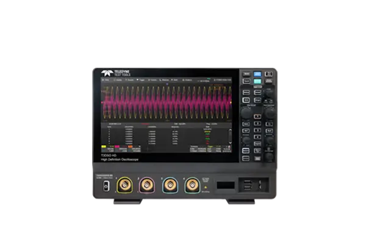
T3DSO2000HD
100 MHz – 350 MHz- 12-bit ADC · 70 μVrms noise floor
- 200 Mpts per channel · 500,000 wfm/s
- 10.1" capacitive multi-touch display
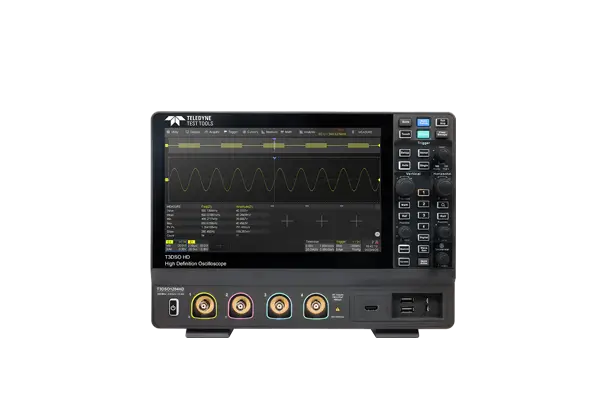
T3DSO1000HD
100 MHz – 200 MHz- 12-bit ADC · 100 Mpts per channel
- 80,000 frame history waveform recording
- 120,000 wfm/s capture rate
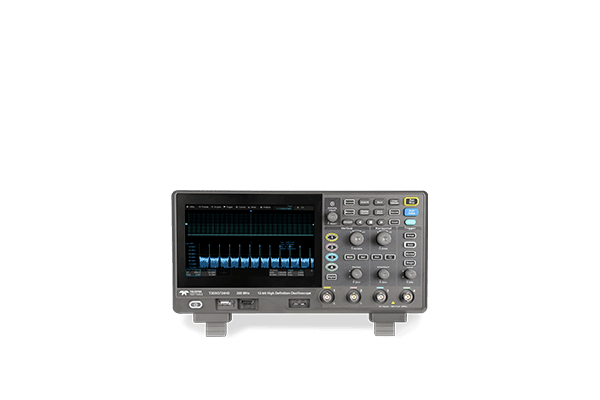
T3DSO700HD
70 MHz – 200 MHz- 12-bit ADC · 100 Mpts per channel
- 7" capacitive multi-touch display
- Optional 50 MHz arbitrary waveform generator
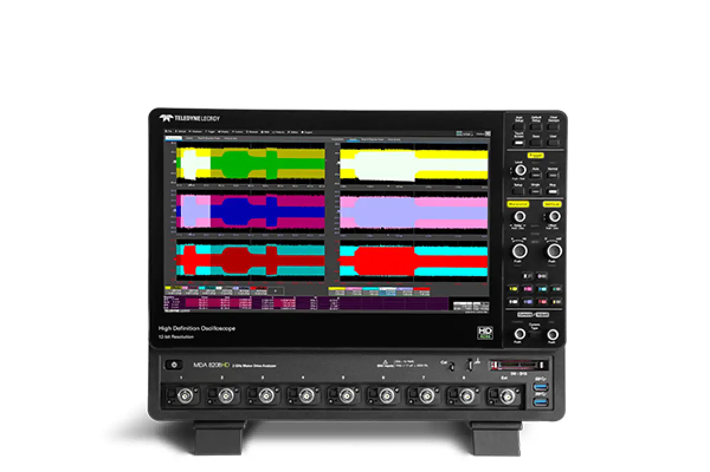
MDA 8000HD
350 MHz – 2 GHz- Dedicated Motor Drive Analyzer with 8 channels
- 12-bit HD4096 · 10 GS/s · 5 Gpts memory
- Motor & power analysis software built-in
8-bit
Standard Oscilloscopes
High-performance 8-bit scopes with advanced triggering, deep memory, and MAUI touchscreen interface.
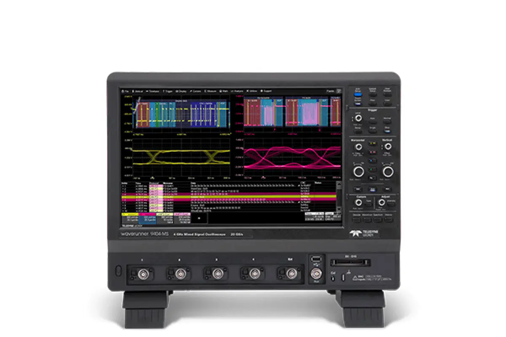
WaveRunner 9000
500 MHz – 4 GHz- Up to 4 GHz bandwidth with MAUI OneTouch UI
- Eye diagram generation with mask testing & failure locator
- 30+ serial protocol support with color decode overlay
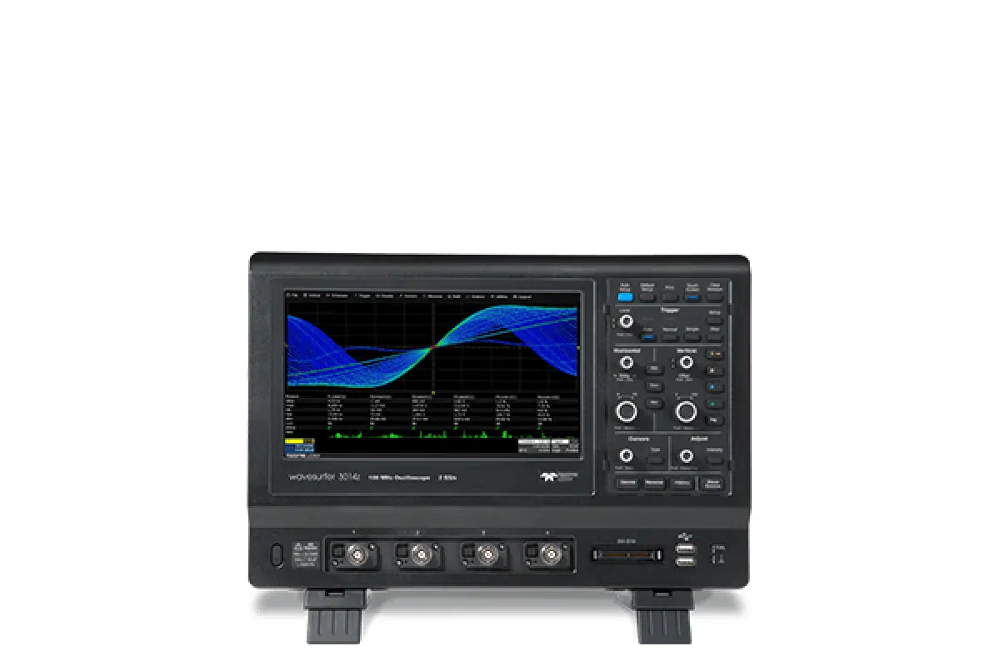
WaveSurfer 3000z
100 MHz – 1 GHz- MAUI interface · 20 Mpts per channel · 4 GS/s
- WaveScan anomaly detection with fast waveform capture
- Optional 16-channel mixed-signal (MSO) analysis
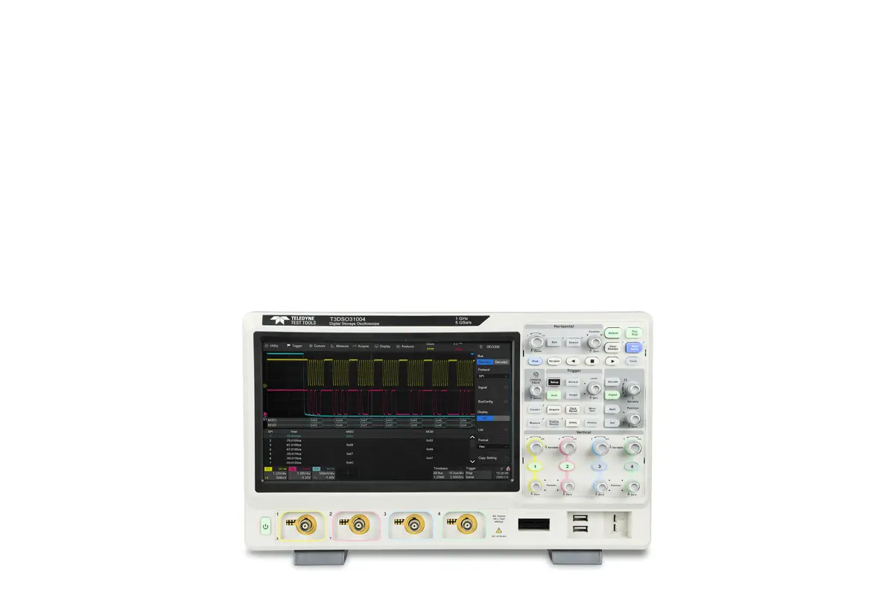
T3DSO3000
200 MHz – 1 GHz- 890,000 wfm/s · Bode Plot analysis built-in
- 50+ automatic measurements with statistics
- 10.1" capacitive multi-touch display
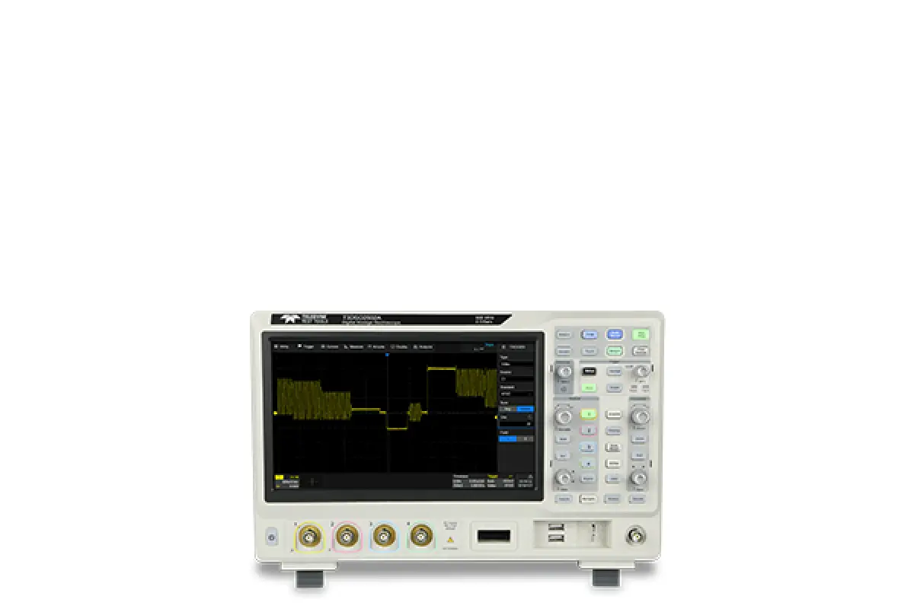
T3DSO2000A
100 MHz – 500 MHz- 500,000 wfm/s waveform capture rate
- 10.1" capacitive multi-touch display
- Serial decode: I²C, SPI, UART, CAN, LIN
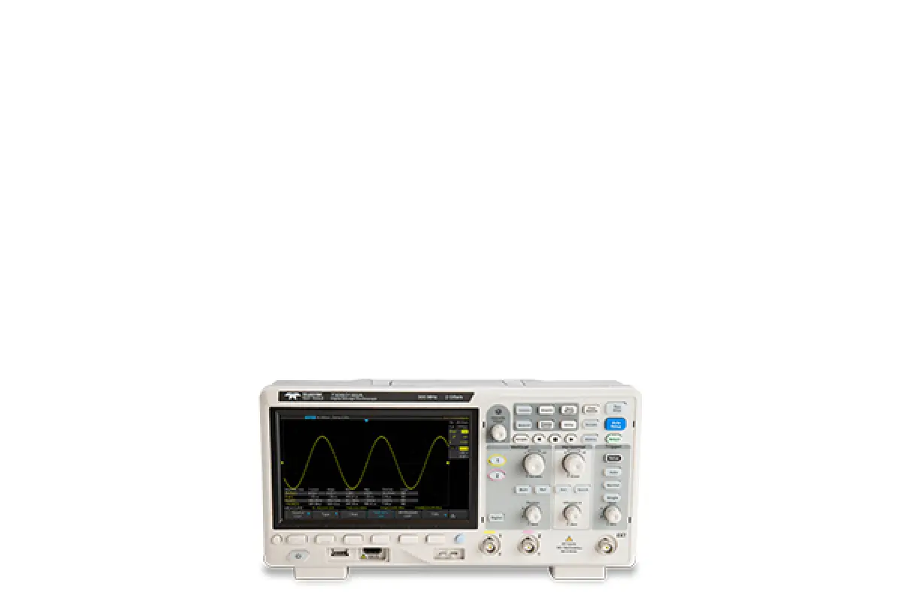
T3DSO1000 / 1000A
100 MHz – 350 MHz- 2 GS/s sample rate · 100 Mpts memory
- 80,000 frame history waveform recording
- Serial decode: I²C, SPI, UART, CAN, LIN, CAN FD
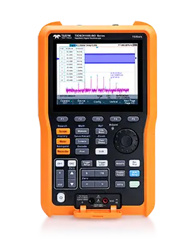
T3DSOH1000-ISO
100 MHz – 200 MHz- Isolated / safety-certified oscilloscope design
- 2-channel · compact form factor
- Ideal for floating-reference & high-voltage measurements
Ultra High-End
High-End & Modular Systems
Scalable modular platforms for the most demanding multi-channel, ultra-wideband applications.
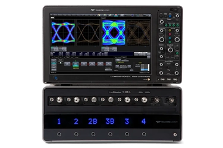
LabMaster 10 Zi-A
20 GHz – 36 GHz- Modular: 4 to 80 channels · up to 80 GS/s
- <50 fs rms intrinsic clock jitter · ChannelSync technology
- Server-class CPU · up to 192 GB RAM